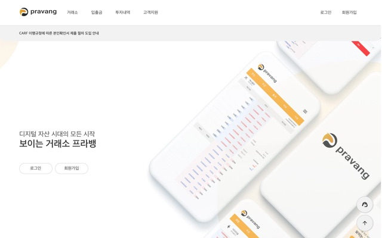

IT개발부 과장/Front-end 파트장/Full-stack
블록체인 가상자산거래소. 15명 규모 개발 조직에서 프론트엔드 파트 5명을 리딩하며 백엔드 8명과 협업합니다. 웹 백오피스 모바일 앱 백엔드 API 네 시스템을 관통해 개발했고, 중단됐던 서비스를 USDT 마켓 등 신규 기능과 함께 재설계해 2026.02 재런칭했습니다.
대표 프로젝트
10년 된 jQuery 2 레거시로 로딩이 느리고 성능 점수가 60점대에 머물렀습니다.
jQuery 4 + TypeScript로 전면 전환하고, Webpack 번들 통합(layout 4→1, exchange 6→1), Brotli 사전압축, 이미지 최적화(SVG→WebP, 3.9MB→278KB)를 함께 적용했습니다.
전송량 최대 86% 절감, Lighthouse 성능 60→99, SEO 80→100을 달성했고, 개인 커밋 1,700+로 2026.02 재런칭했습니다.
앱 탭 전환이 3~5초 지연되고, 금융 보안 위협(MITM, 생체인증 레이스)과 콜드스타트 무한대기 장애가 있었습니다.
Flutter 멀티웹뷰 아키텍처와 JS-Native 브릿지를 설계하고, SSL 검증 강제(MITM 방어), 생체인증 TOCTOU 뮤텍스 해소, freeRASP 디바이스 무결성을 적용했습니다.
탭 전환을 3~5초 → 즉시로 줄이고 콜드스타트 장애를 해소했으며, 2026.06 ISMS 갱신 심사에 대응했습니다.
실시간 시세와 호가 갱신이 지연되고 차트가 구버전이며 호가창 깊이가 얕았습니다.
WebSocket(STOMP) 델타 렌더링, TradingView 차트 v26→v31 마이그레이션, 호가창 10단→20단을 프론트부터 백엔드 Controller/Repository까지 관통해 구현했습니다.
지연 없는 실시간 시세 UI와 20단 호가를 제공하고, 백오피스 보안 인프라(서블릿 필터 + Spring Session, jsoup XSS Sanitizer)까지 직접 설계했습니다.

pravang.com 바로가기